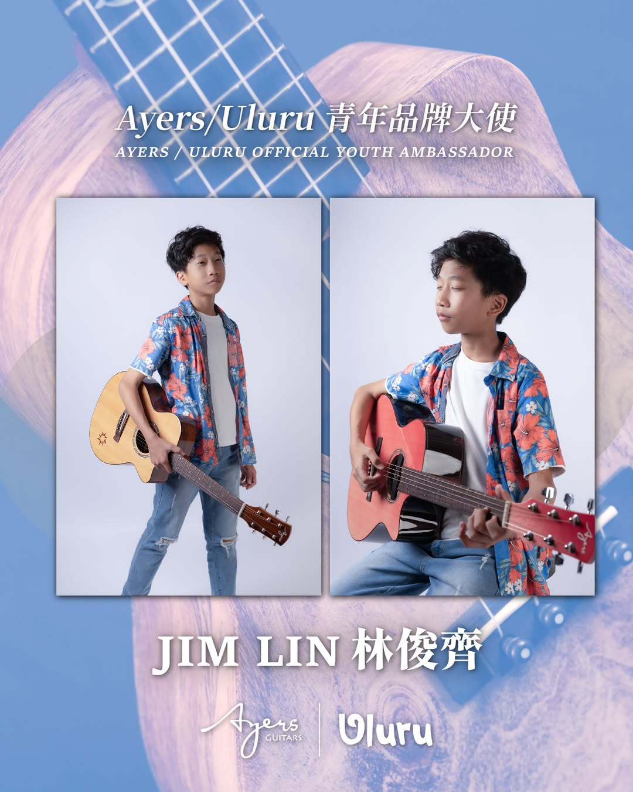

愛樂之夜 ✦ 林俊齊首場個人演奏會
活動資訊 Information
📅
日期 Date
2026 / 01 / 23（五）
⏰
時間 Time
19:00 觀眾入場 / 19:30 演出開始
🎫
票價 Ticket
$250（預售）／ $350（現場）
* 票價含一杯酒水飲料，可攜帶外食
📍
地點 Location
Ayers Guitar 旗艦店 (台北)
台北市中山區建國北路二段139號13樓之1
查看演出空間 (Instagram)
當日流程 Schedule
17:30
演出者試音
18:30
休息吃飯
19:00
觀眾進場
19:30
演出開始
(演出時間 45 分鐘)
20:15
Open Mic
至 22:00
✧ 歡迎一起來玩 Jam！
無須自備樂器，現場提供多款木吉他可選擇，想帶上自己的任何樂器也歡迎！
🎤 雙Vocal麥克風
🎸 民謠/古典吉他
🪘 金杯鼓
📦 木箱鼓
🎹 Keyboard
🛸 手碟
22:00
撤場
22:30
收拾完離開場地